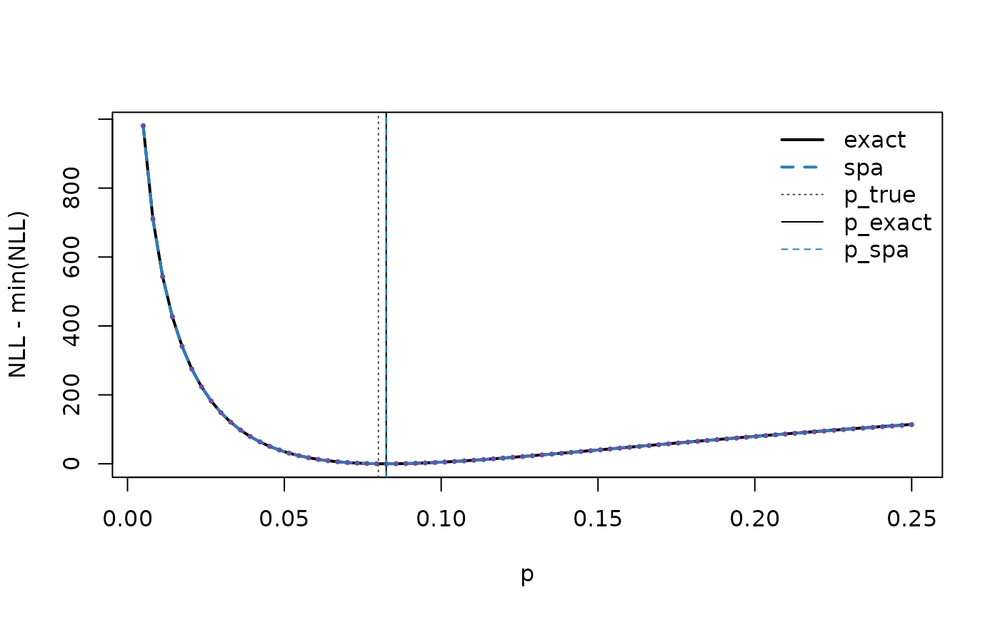

find.saddlepoint.MLE() is the main high-level function
for maximum-likelihood estimation (MLE) under a saddlepoint
approximation (SPA).compute.spa.negll() is the corresponding low-level tool for
evaluating the saddlepoint negative log-likelihood (and, optionally, its
derivatives).
What find.saddlepoint.MLE() returns
At a minimum, the output contains:
-
MLEs.theta: the fitted parameters , -
MLEs.tvec: the fitted saddlepoint solution (same length as the data), -
std.errorwhenstd.error = TRUE, -
discrepancywhendiscrepancy = TRUE, etc.
The two optimisation strategies
find.saddlepoint.MLE() supports two fitting options:
-
method = "constrained"(default): Joint optimisation over (tvec, theta) usingnloptr, while enforcing the saddlepoint equation as equality constraints. This is robust and is the recommended default, especially when the CGF has a non-trivial domain constraint ontvecviacgf$ineq_constraint(tvec, theta). -
method = "two_step": optimizes over only; for each it computes the saddlepoint solution internally (analytic if available, otherwise numerical solvers (Newton, or via constrained solvers)). This keeps the outer optimization low-dimensional and can be easier to tune. However,method = "two_step"is optimized for cases where the saddlepoint equation can be solved efficiently for each candidate (e.g., via an analytic or an unconstrainedtvecpath).
In the current implementation, if the CGF imposes a non-trivial
domain/inequality constraint on tvec via
cgf$ineq_constraint(tvec, theta) and no analytic
is available, can be much slower. In such cases we
recommend the default method = "constrained". Future
versions may improve performance for constrained CGFs under
method = "two_step".
Other arguments
- Model parameters:
-
starting.theta,lb.theta,ub.thetacontrol the outer optimisation in .
-
- Saddlepoint variable (usually you can leave these alone):
-
starting.tvec,lb.tvec,ub.tveccan help if you need to guide the saddlepoint solver or enforce bounds.
-
- Approximation flavor:
-
zeroth.order = TRUEuses the zeroth-order SPA objective (no first-order correction term).
-
- Extras:
-
std.error = TRUEcomputes standard errors. -
discrepancy = TRUEcomputes the package’s discrepancy diagnostic/approximation.
-
Example 1: Gamma model (both methods)
Here we fit Gamma parameters (shape/rate) using the saddlepoint likelihood.
set.seed(1)
n <- 40
alpha_true <- 8
beta_true <- 2
x <- rgamma(n, shape = alpha_true, rate = beta_true)
# constrained (joint over tvec and theta)
res_con <- find.saddlepoint.MLE(
observed.data = x,
cgf = GammaCGF,
starting.theta = c(alpha = 5, beta = 1),
lb.theta = c(1e-6, 1e-6),
ub.theta = c(Inf, Inf),
method = "constrained",
std.error = TRUE,
discrepancy = TRUE
)
# two-step
res_two <- find.saddlepoint.MLE(
observed.data = x,
cgf = GammaCGF,
starting.theta = c(alpha = 5, beta = 1),
lb.theta = c(1e-6, 1e-6),
ub.theta = c(Inf, Inf),
method = "two_step",
std.error = TRUE,
discrepancy = TRUE
)
cbind(
true = c(alpha_true, beta_true),
two_step = res_two$MLEs.theta,
constrained = res_con$MLEs.theta
)
#> true two_step constrained
#> [1,] 8 10.579017 10.579020
#> [2,] 2 2.758294 2.758295
res_two$std.error
#> [1] 2.3655400 0.6311805
res_two$discrepancy
#> [1] 0.16666667 0.04345543Example 2: Aggregated successes from a random number of sessions
This example illustrates a compositional model where the exact likelihood can be awkward.
- Sessions per day:
- Successes per session:
- Observed daily total:
We build the CGF of compositionally, then fit .
set.seed(1)
B <- 40 # number of days
lambda <- 10 # mean sessions/day (fixed here)
m <- 20 # opportunities per session
p_true <- 0.08
# Latent sessions/day
N <- rpois(B, lambda)
# Observed daily totals
Y <- rbinom(B, size = N * m, prob = p_true)
# CGF blocks: N ~ Poisson(lambda), X ~ Binomial(m,p)
count_cgf <- PoissonModelCGF(
lambda = adaptor(fixed_param = lambda),
iidReps = 1
)
summand_cgf <- BinomialModelCGF(
n = adaptor(fixed_param = m),
p = adaptor(indices = 1),
iidReps = 1
)
# Randomly-stopped sum across B i.i.d. days
cgf_Y <- randomlyStoppedSumCGF(
count_cgf = count_cgf,
summand_cgf = summand_cgf,
# iidReps = B,
block_size = 1
)
# ## OR
# Y <- as.numeric(cgf_Y$rsim(n = B, vector_length = 1, parameter_vector = p_true))
fit_p <- find.saddlepoint.MLE(
observed.data = Y,
cgf = cgf_Y,
starting.theta = 0.05,
lb.theta = 1e-6,
ub.theta = 1 - 1e-6,
method = "two_step",
std.error = TRUE
)
c(p_true = p_true, p_hat_spa = fit_p$MLEs.theta)
#> p_true p_hat_spa
#> 0.08000000 0.08048538
fit_p$std.error
#> [1] 0.005020156Additional theta-only inequality constraints (non-box constraints)
Most constraints can be handled using lb.theta /
ub.theta.user.ineq.constraint.function() is intended for constraints
that cannot be expressed as independent bounds.
Imagine you track daily event counts for three ordered risk groups
(low / medium / high) over B days.
Let the per-day rates be and suppose domain knowledge suggests a monotone trend:
These may be enforced via custom reparameterization, but
user.ineq.constraint.function() lets you state them
directly while keeping the natural parameters.
This is strictly a toy example to illustrate how to use
user.ineq.constraint.function().
set.seed(1)
B <- 30
# Toy truth that violates monotonicity (to make the constraint bind obvious)
theta_true <- c(lambda_low = 3.0, lambda_med = 7.0, lambda_high = 5.0)
# Daily counts per group (3 by B); each column is a day
Y_daily <- rbind(
low = rpois(B, lambda = theta_true["lambda_low"]),
medium = rpois(B, lambda = theta_true["lambda_med"]),
high = rpois(B, lambda = theta_true["lambda_high"])
)
# Observed totals over B days per group (length 3)
y <- rowSums(Y_daily)
# actual MLE
theta_uncon <- as.numeric(y) / B
# Build the CGF for totals
cgf <- PoissonModelCGF(lambda = function(theta) B * theta)
# ## We could also use rsim()
# set.seed(1)
# y <- as.numeric(cgf$rsim(n = 1, vector_length = 3, parameter_vector = c(lambda_low = 3.0, lambda_med = 7.0, lambda_high = 5.0)))
# NLOPT convention: constraints(theta) <= 0 is feasible.
# lambda_low <= lambda_med <= lambda_high
user_ineq <- function(theta){
constraints <- c(
theta[1] - theta[2], # low - med <= 0
theta[2] - theta[3] # med - high <= 0
)
jacobian <- rbind(
c( 1, -1, 0),
c( 0, 1, -1)
)
list(constraints = constraints, jacobian = jacobian)
}
fit <- find.saddlepoint.MLE(
observed.data = as.numeric(y),
cgf = cgf,
starting.theta = c(1,2,3),
lb.theta = rep(1e-10, 3),
ub.theta = rep(Inf, 3),
method = "two_step",
user.ineq.constraint.function = user_ineq
)
fit$MLEs.theta
#> [1] 3.1 6.0 6.0
# Note:
# - If you OMIT user.ineq.constraint.function(), the fit reduces to the usual Poisson MLE:
# theta_uncon = y / B
# - Because we simulated a violation (med > high), we should expect lambda_med == lambda_high.Likelihood evaluation: compute.spa.negll()
compute.spa.negll() evaluates the SPA negative
log-likelihood at a given parameter_vector.
It can also return derivatives (gradient,
hessian) which is useful for debugging or plugging into
custom optimisers.
set.seed(1)
theta0 <- c(mu = 0, sigma = 1)
y <- as.numeric(NormalCGF$rsim(n = 10, vector_length = 1, parameter_vector = theta0))
nll <- compute.spa.negll(
parameter_vector = theta0,
observed.data = y,
cgf = NormalCGF,
gradient = TRUE,
hessian = TRUE,
spa_method = "standard",
tvec_source = "auto"
)
nll$vals
#> [1] 12.01869
nll$gradient
#> [1] -1.322028 4.341394
nll$hessian
#> [,1] [,2]
#> [1,] 10.000000 2.644056
#> [2,] 2.644056 6.975817Repeated likelihood evaluation and tape creation
When you request derivatives (gradient = TRUE and/or
hessian = TRUE), compute.spa.negll() will
(internally) build an RTMB tape and then evaluate it at the supplied
parameter_vector.
If you need to evaluate the same SPA objective many times (e.g., inside your own optimisation loop), it is more efficient to build the tape once and reuse it. The package currently uses an internal helper for this:
-
saddlepoint:::create_spa_taped_fun()(internal function; may change without notice)
A minimal pattern is:
taped_nll <- saddlepoint:::create_spa_taped_fun(
param_vec = theta0,
observed.data = y,
cgf = NormalCGF,
spa_method = "negll_standard",
tvec_source = "auto",
gradient = TRUE,
hessian = FALSE
)
# Now reuse without re-taping:
taped_nll(theta0)$vals
taped_nll(c(mu = 0.5, sigma = 1.2))$valsSPA vs true MLE in the random-sum Binomial example
set.seed(5)
B <- 40; lambda <- 10; m <- 20
p_true <- 0.08
count_cgf <- PoissonModelCGF(lambda = adaptor(fixed_param = lambda) )
summand_cgf <- BinomialModelCGF(
n = adaptor(fixed_param = m),
p = adaptor(indices = 1)
)
cgf_Y <- randomlyStoppedSumCGF(
count_cgf = count_cgf,
summand_cgf = summand_cgf,
block_size = 1
)
Y <- as.numeric(cgf_Y$rsim(n = B, vector_length = 1, parameter_vector = p_true))
# Exact likelihood
.log_sum_exp <- function(v) {
mx <- max(v)
mx + log(sum(exp(v - mx)))
}
.log_pmf_compound_pois_binom <- function(y, p, lambda, m, n_max) {
if (!is.finite(p) || p <= 0 || p >= 1) return(-Inf)
n_min <- if (y == 0) 0L else as.integer(ceiling(y / m))
n <- n_min:n_max
log_terms <- dpois(n, lambda = lambda, log = TRUE) +
dbinom(y, size = n * m, prob = p, log = TRUE)
.log_sum_exp(log_terms)
}
.fit_exact_p <- function(Y, lambda, m) {
n_max <- qpois(1 - 1e-12, lambda) + 80L
nll <- function(p) {
lp <- vapply(
Y,
function(yy) .log_pmf_compound_pois_binom(yy, p, lambda, m, n_max),
numeric(1)
)
if (any(!is.finite(lp))) return(Inf)
-sum(lp)
}
opt <- optimize(nll, interval = c(1e-6, 1 - 1e-6))
list(p_hat = opt$minimum, nll = opt$objective, n_max = n_max)
}
# fit SPA
fit_spa <- find.saddlepoint.MLE(
observed.data = Y,
cgf = cgf_Y,
starting.theta = 0.05,
lb.theta = 1e-6,
ub.theta = 1 - 1e-6,
method = "two_step",
std.error = FALSE
)
p_spa <- as.numeric(fit_spa$MLEs.theta)
# fit exact
fit_ex <- .fit_exact_p(Y, lambda, m)
p_ex <- fit_ex$p_hat
# profile curves on a grid
p_grid <- seq(0.005, 0.25, length.out = 80)
# exact nll curve
nll_exact_grid <- vapply(p_grid, function(p) {
.fit_exact_p(Y, lambda, m)$nll # (simple but repeats work)
}, numeric(1))
n_max <- fit_ex$n_max
nll_exact_grid <- vapply(p_grid, function(p) {
-sum(vapply(Y, function(yy) .log_pmf_compound_pois_binom(yy, p, lambda, m, n_max), numeric(1)))
}, numeric(1))
# SPA nll curve
taped_nll <- saddlepoint:::create_spa_taped_fun(
param_vec = p_true,
observed.data = Y,
cgf = cgf_Y,
spa_method = "negll_standard",
tvec_source = "auto",
gradient = FALSE
)
nll_spa_grid <- vapply(p_grid, function(p) { taped_nll(p)$vals}, numeric(1))
# Plot: profile curves - shifted
y1 <- nll_exact_grid - min(nll_exact_grid, na.rm=TRUE)
y2 <- nll_spa_grid - min(nll_spa_grid, na.rm=TRUE)
plot(p_grid, y1, type="l", lwd=2, col="black",
xlab="p", ylab="NLL - min(NLL)")
lines(p_grid, y2, lwd=2, lty=2, col="#2C7FB8")
points(p_grid, y2, pch=16, cex=.5, col="#6A51A3")
abline(v=p_true, lty=3, col="grey30")
abline(v=p_ex, lty=1, col="black")
abline(v=p_spa, lty=2, col="#2C7FB8")
legend("topright",
legend=c("exact","spa","p_true","p_exact","p_spa"),
col=c("black","#2C7FB8","grey30","black","#2C7FB8"),
lty=c(1,2,3,1,2), lwd=c(2,2,1,1,1), bty="n")
c(p_true = p_true, p_exact = p_ex, p_spa = p_spa)
#> p_true p_exact p_spa
#> 0.08000000 0.08247427 0.08256963